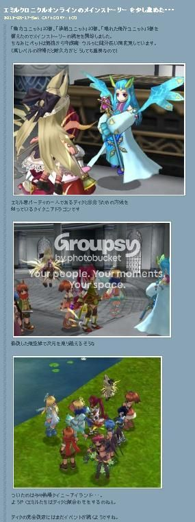

รบกวนคนที่ยังเล่นเกม ECO อยู่ครับ สอบถามเนื้อเรื่อง
ใช้ ผมเกิ้ล(google) ค้น ๆ ECO ไปเจอรูปแก๊งอีมิล เหมือนช่วยชีวิต tita สำเร็จ และได้กลับเข้าร่วมกลุ่มกับ อีมิล แล้ว(ใช่มั้ย?)
อยากรู้เรื่องราวบ้าง รบกวนท่านผู้ีรู้ ช่วยเล่าให้อ่านหน่อยนะครับ
ขอบคุณมักมากเลยครับ
credit: http://emilfan.blog23.fc2.com/blog-category-1.html
อยากรู้เรื่องราวบ้าง รบกวนท่านผู้ีรู้ ช่วยเล่าให้อ่านหน่อยนะครับ
ขอบคุณมักมากเลยครับ

credit: http://emilfan.blog23.fc2.com/blog-category-1.html